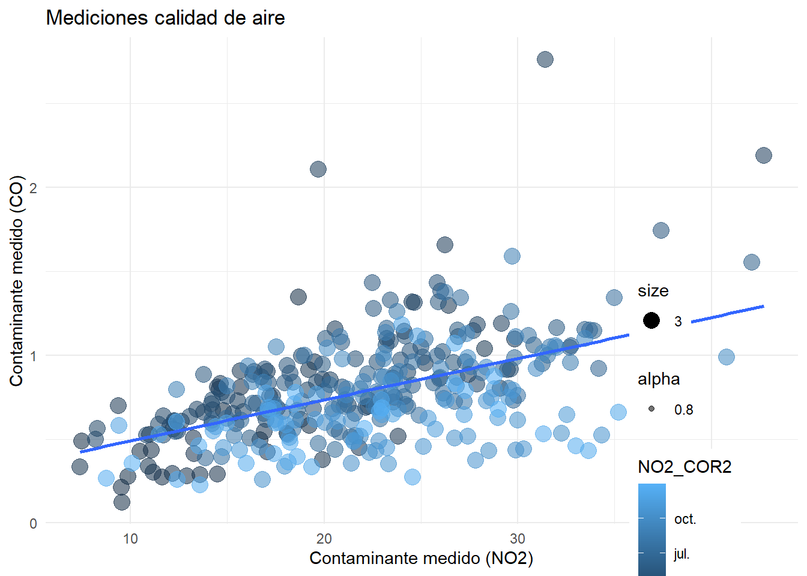

Cohorte 2021
Trabajos finales
Trabajos finales utilizando Tableau o RMarkdown y ggplot2.
Concurso el gráfico más feo
Los gráficos están listados por orden alfabético
Agustín Osés
library(dplyr)
library(ggplot2)
library(readr)
library(tidyverse)
library(readxl)
library(datos)
library(png)
library(patchwork)
petroleo <- readPNG("datos/petroleo.png",native = TRUE)
torres <- readPNG("datos/torres.png",native = TRUE)
aviones_2 <- aviones %>%
group_by(anio) %>%
summarise(mean(asientos))
colnames(aviones_2) <- c("anio", "promedio")
ggplot(aviones_2, aes(x=anio, y=promedio)) +
theme_dark()+
theme(plot.title = element_text(size = 15, colour = "brown", face = "italic"), plot.subtitle = element_text(size = 12, colour = "yellow", face = "italic"), plot.background = element_rect (fill = "violet"), plot.caption = element_text(size=9, color = "green"))+
theme(panel.grid.major = element_line(color = "grey", size = 1, linetype = "dashed"))+
theme(axis.title = element_text(colour = "orange", face = "italic", size = 20))+
theme(axis.text.x = element_text(colour= "red", angle = 60,))+
theme(axis.text.y = element_text(colour= "red", angle = -45,))+
labs(x= "año", y = "asientos Promedio", title = "Cantidad Promedio de Asientos Por Avión Según Año de Fabricación", subtitle = "capacidad promedio de Aeronaves y su relación con hEchos históricos", caption = "fuente: paquete datos, DATASET Aviones, según registros de la FAA (Administración Federal de Aviación, EEUU") +
geom_rect(aes(xmin=1956,xmax=1973,ymin=-0,ymax=250), fill="Brown", alpha=1)+
geom_rect(aes(xmin=1973,xmax=2001,ymin=-0,ymax=250), fill="Yellow", alpha=1)+
geom_rect(aes(xmin=2001,xmax=2013,ymin=-0,ymax=250), fill="Green", alpha=1)+
geom_point(aes(size=promedio), colour="blue", shape=17)+
geom_vline(aes(xintercept=1973), colour=1, size=3)+
geom_vline(aes(xintercept=2001), colour=2, size=3)+
geom_smooth(size=3, colour ="Grey")+
inset_element (p= torres, left = 0.9, bottom = 0.15, right = 0.7, top = 0.50)+
inset_element (p= petroleo, left = 0.25, bottom = 0.65, right = 0.40, top = 1)
Alexander Sothmann
Gráfico enviado al concurso
library(tidyverse)
paises <-datos::paises
paises_filtrado <- filter(paises,anio>=2000 & anio<=2021)
ggplot(paises, aes(x = poblacion, y = esperanza_de_vida))+
geom_point(aes(size = pib_per_capita))+
scale_size_area(max_size = 15, guide = NULL) +
scale_x_log10()+
geom_smooth(method = "lm", se = FALSE, aes(color = anio))+
facet_wrap(~continente)+
labs(title = "Paises del mundo",
subtitle = "Año 2000 a 2021",
caption = "El tamaño de cada circulo representa el producto bruto interno por cada habitante.",
x = "poblacion",
y = "Life expectancy",
color = "")Gráfico 3D extra
library(scatterplot3d)
paises <-datos::paises
x <- paises$poblacion
y <- paises$esperanza_de_vida
z <- paises$anio
scatterplot3d(x, y, z, pch = 19, color = "blue")
Ana Clara Suiffet
ggplot(provincia_porc, aes(x=1, y=percentage,fill=provincia)) +
geom_bar(stat="identity") +
scale_fill_manual(values=rainbow(24)) +
geom_text(aes(label = paste0(round(percentage,1),"%")),
position = position_stack(vjust = 0,5)) +
coord_polar(theta= "y") +
theme_void()+
labs(
x = "Provincias Argentinas",
y = "Porcentaje de Puntos Digitales",
title="Porcentaje de Puntos Digitales por Provincias",
subtitle = "Intento n°99247892 con lo que Yani detesta: gráfico de torta en 3D o 45° y colorinche",
fill = "Porcentaje",
caption = "Fuente: mapa de Puntos Digitales https://mapa.puntodigital.gob.ar/")
Analia Savino
expo_biodiesel <- expo_biodiesel %>%
mutate(fecha_corregida = dmy(fecha))
expo_biodiesel <- expo_biodiesel %>%
select(fecha_corregida, pais_destino, cantidad_ton, monto_fob) %>%
mutate(ano = year(fecha_corregida))
exp_bio_limpio <- expo_biodiesel %>%
group_by(pais_destino) %>%
summarise(cant_ton =sum(cantidad_ton), monto = sum(monto_fob)) %>%
ungroup() %>%
filter(cant_ton <=15000)
ggplot(exp_bio_limpio) +
geom_col(aes(x= pais_destino, y= cant_ton, fill=monto))+
labs(title = "Paises a los que menos biodisel exporatmos",
x="Paises",
y= "Toneladas")
Bianca Vallejos
# Fuente de datos: cotizaciones extraidas de Ambito (https://www.ambito.com/contenidos/merval-historico.html)
grafico_1 <- ggplot(cotizacion, aes(fecha, precio_cierre, col = mes)) +
geom_line() +
geom_point() +
theme(axis.title.x=element_blank(),
axis.text.x=element_blank(),
axis.ticks.x=element_blank(),
panel.background = element_rect(fill="light green"),
text=element_text(family="Comic Sans MS")) +
labs(title = "Cotizacion diaria del MERVAL", subtitle = "Año 2021")
grafico_final <- ggdraw(grafico_1) +
draw_image("https://i.pinimg.com/564x/44/a3/d1/44a3d17dea5ec11f27445fece8e137ba.jpg",
scale = .43, x = 1, hjust = 1, halign = 0.135, valign = 0.12)
grafico_final
ggsave("grafico_final.jpg", width = 7, height = 4)
Erika Lucena
library(datos)
library(readr)
library(dplyr)
library(ggplot2)
library(png)
library(patchwork)
precio_mediana<- diamantes %>%
summarise(precio_mediana= median(precio))
precio_max<- diamantes %>%
summarise(precio_max= max(precio))
grafico_feo <- diamantes %>%
ggplot()+
geom_boxplot(aes(corte, precio, fill=corte))+
geom_line(aes(quilate, precio, color=corte))+
labs(title='¿El precio del corte "Ideal" puede ser menor al resto de los cortes?', subtitle="La mediana del precio para el corte de análisis es menor que en el resto de los cortes", caption= "Fuente:Base Diamantes de la librería Datos de R")+
geom_hline(data=precio_mediana, aes(yintercept = precio_mediana), color="yellow", linetype=2)+
geom_hline(data=precio_max, aes(yintercept = precio_max), color="yellow", linetype=2)+
theme(text= element_text(color="red", face="bold"), plot.background = element_rect (fill = "pink"), panel.grid.major.x= element_line(size=1, color="red", linetype = "3313"), panel.grid.major.y=element_line(size=1, color="red", linetype = "dotdash"), legend.background= element_blank(), panel.background= element_rect(fill="green"))+
annotate('text', x = 4.5, y = precio_mediana$precio_mediana-500, label = "Mediana del Precio para todos los cortes", fontface = "bold", size=2, color="yellow")+
annotate('text', x = 4, y = precio_max$precio_max+500, label = "Precio Máximo", color="yellow", fontface = "bold", size=2)
grafico_feo 
Facundo Monti
ggplot(empresas, aes(x = Categoria, y = Provincia)) +
geom_point(aes(color = "Provincia"))
Federico Aramburu
library(tidyverse)
library(ggplot2)
# Homero
homero <- tibble (x= c(3.7,3.5,3.32,3.8,4.4,4.6,5.0,4.6,3.9,3.6,3.7,3.8,3.82,3.85,3.95,3.82,3.7,3.68,
3.69,3.75,3.82,3.97,3.82,3.75,3.53,3.49,3.52,3.69,3.89,4.2,4.4,4.75,4.9,5.25,5.5,
5.6,5.7,5.78,5.72,5.65,5.52,5.48,5.44,5.35,5.29,5.25,5.16,5.25,5.29,5.35,5.44,
5.48,5.52,5.65,5.72,5.76,5.80,5.85,5.86,5.82,5.72,5.71,5.45,5.25,5.45,5.7095,
5.77,5.755,5.75,5.65,5.78,5.9,5.75,5.5,5.37,5.25,4.95,4.79,4.6,4.65,4.6,4.48),
y= c(1.5,1.47,0.87,0.515,0.23,0.87,0.36,0.87,1.15,1.46,1.38,2,2.51,2.5088,2.5095,2.514,
2.56,2.63,2.85,2.9,2.94,2.90,2.94,2.9,3.65,4.05,4.56,5.1,5.30,5.50,5.55,5.53,5.48,
5.20,4.85,4.55,4.15,4,3.85,3.89,3.91,3.92,3.91,3.88,3.85,3.83,3.75,3.83,3.85,3.88,
3.91,3.92,3.91,3.89,3.85,3.81,3.74,3.65,3.48,3.32,3.18,3.175,3.19,3.20,3.19,3.174,
3.05,2.98,2.87,2.8,2.18,2,1.87,1.74,1.73,1.732,1.75,1.84,2,2.1,2,1.9))
#82 puntos
oreja <- tibble (a = c(3.75,3.80,3.90,3.80,3.75,3.72 ,rep(NA,76)),
b = c(2.65,2.75,2.83,2.75,2.83,2.81 ,rep(NA,76)),
m = c(3.5,3.52,3.75,3.85,4 ,rep(NA,77)),
p = c(2.98,3.40,3.08,3.50,3.12 ,rep(NA,77)))
boca <- tibble (bocax= c(5.16,5.45,5.70,5.77,5.755,5.75,5.65,5.50,5.40,5.25,4.8,4.65,4.45,4.32,4.23,
4.22,4.30,4.38,4.5,4.75,4.82,4.9,5.12,5.28,5.32,5.42,5.32,5.28,5.12,5.05,
5.10,5.13,5.2,5.23,5.20,5.52,5.08,5.52,5.50,5.52,5.40,5.19,5.28,rep(NA,39)),
bocay= c(3.20,3.19,3.17,3.05,2.98,2.87,2.80,2.81,2.84,2.83,2.75,2.65,2.52,2.25,2.15,
1.84,1.68,1.47,1.25,1.18,1.16,1.19,1.3,1.475,1.53,1.71,1.53,1.475,1.3,1.10,
0.80,0.53,0.45,0.39,0.26,1.01,1.18,1.01,0.99,0.29,0.35,0.365,0.11,rep(NA,39)))
ojos <- tibble (ojox= 4.85,ojoy=3.465,ojox1=4.65,ojoy1=3.42,ojox2=5.4,ojoy2=3.42)
lata <- tibble (ll = c(8.5,8.6,9.6,9.5,rep(NA,78)),
kk = c(5.5,4.0,4.0,5.5,rep(NA,78)),
hh = c(8.53,8.58,9.55,9.5,rep(NA,78)),
jj = c(5.2,4.55,4.59,5.24,rep(NA,78)))
homero %>%
ggplot()+
geom_path( aes (x, y),size = 0.5, col="blue2")+
geom_point(aes(ojos$ojox,ojos$ojoy), size=19, pch=1, col="blue2")+
geom_point(aes(ojos$ojox1,ojos$ojoy1), size = 2)+
geom_point(aes(ojos$ojox2,ojos$ojoy2), size = 2)+
geom_path( aes (x = oreja$a, y = oreja$b),col="blue2") +
geom_path( aes (x = oreja$m, y = oreja$p),size=0.6, col= "blue2") +
geom_path( aes (x = boca$bocax, y = boca$bocay),size=0.5, col= "blue2") +
geom_curve(aes(x=4.85, y=5.50, xend=4.15, yend=5.16), size=0.5,
color="blue3", curvature = 1.3)+
geom_curve(aes(x=4.6, y=5.55, xend=3.9, yend=5), size=0.5,
color="blue3", curvature = 1.3)+
geom_polygon(aes(lata$ll,lata$kk), fill="red", col="grey4",size=0.5)+
geom_polygon(aes(lata$hh,lata$jj), fill="white", col="grey4")+
geom_curve(aes(x=8.57, y=3.98, xend=9.61, yend=4.02), size=1.5,
color="darkgrey", curvature = 0.06)+
geom_curve(aes(x=8.5, y=5.48, xend=9.51, yend=5.51), size=1.5,
color="darkgrey", curvature = -0.04)+
geom_text(x = 9, y = 4.9, label ="Duff",col="black",size= 7,angle=2.5)+
geom_text(x = 9.1, y = 4.3, label ="BEER",col="black",size= 3.5,angle=2.5)+
geom_point(aes(x=9.1,y=4.7), size= 50, pch=1)+
geom_point(aes(x=7.3,y=5.4), size= 12, pch=1)+
geom_point(aes(x=6.5,y=5.2), size= 8, pch=1)+
geom_point(aes(x=5.9,y=5), size= 4, pch=1)+
scale_x_continuous(limits = c(0,10), breaks = c(1,2,3,4,5,6,7,8,9,10))+
scale_y_continuous(limits = c(0,6), breaks = c(1,2,3,4,5,6))+
geom_text(x = 1.5, y = 3, label = "La cerveza es\nla causa y\nsolución\nde todos\nlos problemas",
size=6, angle= 3,col="green2")+
theme_void()
ggsave(paste0("homero",".png"))
# ***"La cerveza es la causa y solución de todos los problemas"*** - **Homero Simpson**
Federico Gonzalez
library(ggplot2)
library(babynames)
library(dplyr)
library(hrbrthemes)
library(viridis)
don <- babynames %>%
filter(name %in% c("Luke", "Christian", "Edward")) %>%
filter(sex=="M")
#Tips:
#No se entiende a que apunta el grafico, no se entiende que son las lineas, hay un solo color.
#No hay explicación anexa al grafico
#Mas horrible no se consigue
don %>%
ggplot( aes(x=year, y=n, group=name, color=name)) +
geom_line(color='black') +
ggtitle("Popularity of American names in the previous 30 years") +
ylab("Number of babies born")
Federico Santoro
dia_max<-as.Date("2020-12-31")
prov %>%
ggplot(aes(x = FIS, fill = Fallecido))+
geom_histogram(binwidth = 30, color = "limegreen")+
scale_x_date(date_breaks = "7 days", date_labels = "%W",expand = c(0,1))+
scale_y_continuous(breaks = c(0,15,100,256,1032,2222,9876,15000,31000), labels = c(0,15,100,256,1032,2222,9876,15000,31000), limits = c(0,31000),expand = c(1,1))+
labs( x = "Semana", y = "N.Casos", title = "Fallecidos en Chubut por Covid")+
theme(legend.position = "left",
legend.background = element_rect(fill = "magenta", colour = "yellow"),
panel.background = element_rect(fill = "purple", colour = "black"),
panel.grid.major.y = element_line(colour = "yellow"),
plot.background = element_rect(fill = "#eaff00"),
plot.title = element_text(size = rel(4)),
axis.title.x = element_text(size = rel(1.5), angle = 60),
axis.title.y = element_text(size = rel(1.5), angle = 60))+
annotate(geom = "text", x = dia_max, y = 31000, label = "Maximo de muertos", fontface = "bold")+
geom_curve(aes(x= dia_max, y = 27000, xend= dia_max, yend= 12000),
curvature = -0.5,
color = "red",
arrow = arrow(length = unit(0.20, "inch")), size = 2)+
geom_curve(aes(x= dia_max, y = 27000, xend= dia_max, yend= 12000),
curvature = 0.5,
color = "white",
arrow = arrow(length = unit(0.20, "inch")), size = 2)
Hernan Costa
# Cargamos con el paquete EPH la base individual del IV trim 2020
ind_4_20 <- get_microdata(year=2020, trimester=4, type='individual')
# Gráfico del ingreso total individual por género
# Nota: la variable CH04 toma dos valores (1= varón ; 2=mujer)
ggplot(ind_4_20, aes(CODUSU, P47T, color = CH04)) +
geom_col(na.rm = TRUE)
Irene Lindenboim
enero_julio_programas %>%
mutate(planificado_millones=planificado, ejecutado_millones=ejecutado) %>%
ggplot() +
geom_col(aes(x=mes, y=planificado_millones, fill=programa)) +
labs(title = "Planificación y ejecución de programas", subtitle = "Montos en $ - enero a julio 2021", caption = "Observaciones: en las columnas se encuentran los montos planificados y en las líneas los montos ejecutados", x = "mes", y = "$", fill= "Programa")+
geom_line(aes(x=mes, y=ejecutado_millones), color="red", size=1)+
theme_dark()+
theme(plot.caption.position = "plot",
plot.caption = element_text(hjust = -1),
legend.margin = margin(0, 10, 0, 10),
plot.title = element_text(hjust = 0, vjust = 3, family = "mono"),
panel.grid.major = element_line(color = "black"),
plot.margin = margin(100, 50, 100, 50),
legend.position = "left",
legend.justification = "left",
legend.box.background = element_rect(size = 5, color = "red"),
text = element_text(color = "red"),
axis.text = element_text(color = "red"),
legend.text = element_text(color = "red"))+
scale_fill_manual(values=c("red","blue", "white", "black", "yellow", "green" ))
Juan Videla
library(ggplot2)
library(datos)
library(dplyr)
aviones2002<- aviones %>%
filter(anio == "2002" )
ggplot(aviones2002, aes(fabricante))+
geom_bar(aes(fill=fabricante))+
scale_x_discrete(labels = c("Mirá las", "referencias", "en el","recuadro", "rojo"))+
scale_y_continuous(breaks = seq(0, 200, 3.5), expand = c(0.1,0))+
labs(x = "FaBrIcAnTe", y= "Cantidad",
title = "Cantidad de aviones por fabricante en el año 2002",
caption = "Cualquier similitud entre los colores y el fútbol es pura coincidencia")+
scale_fill_manual(values = c("#00008B","#0000FF", "#FFD700", "#DAA520", "#6A5ACD"))+
theme_dark()+
theme(legend.position = c( 0.7, 0.7),
legend.background = element_rect(fill = "red", color = NA),
panel.grid = element_line("red"))
Juan Pablo Costa
library(tidyverse)
library(ggplot2)
library(datos)
diamantes <- datos::diamantes
ggplot(diamantes)+
geom_bar(aes(x=corte, fill=claridad))+
labs(
x="Tipo",
y="Cantidad",
title = "Cantidad de diamantes por tipo y claridad",
fill = "Claridad")+
scale_y_continuous(limits = c(0, 25000),
breaks = seq(0, 25000, 10000),
expand = c(2, 2))+
scale_fill_manual(values=c("red","blue", "darkorange", "purple", "cyan4", "green", "orange", "pink" ))+
theme_dark()+
theme(legend.position = c( 0.7, 0.7),
legend.background = element_rect(fill = "red", color = NA),
panel.grid = element_line("red"))+
save.image("datos/grafico_feo.jpg")
Julieta Couto
library(ggplot2)
library(datos)
library(dplyr)
ggplot(paises, aes(esperanza_de_vida, pib_per_capita)) +
geom_point( aes( color=continente), shape = 3, alpha = 0.2) +
labs (
title = "esp_vida-pbi_per_cap-cont",
x="esp_vida",
color= "cont") +
scale_x_log10()+
scale_color_viridis_d(option = "G") +
theme_minimal()Luciano Tincani y Pamela Sarco
library(ggplot2)
df = data.frame(Formacion = c("Soci?logo", "Economista", "Geografa",
"Relaciones Laborales", "Lic en Sistemas",
"Licenciatura en Analisis de Sistemas",
"Polit?logx","Administracion",
"Ingeniera en inform?tica",
"Analista de Sistemas","Edici?n Editorial",
"LIc. Administracion","Soci?logo"),#categorias
Proporcion = c( .05, .05, .05, .05, .05, .05, .05, .05, .05, .18,
.23, .05, .09))
#
ggplot(df, aes(x = "", y = Formacion, fill = Proporcion)) +
geom_col() +
coord_polar(theta = "y")
ggplot(df, aes(x = "", y = Formacion, fill = Proporcion)) +
geom_col(color = "yellow") +
geom_label(aes(label = Formacion),
color = "red",
position = position_stack(vjust = 0.5),
show.legend = FALSE) +
coord_polar(theta = "y")Manuel Emilio Lopez
gob_local %>%
ggplot(aes(prov,localidad))+
geom_point(aes(color= region, size = pob/100000, shape = genero), alpha = 0.5) +
labs(title = "Cantidad de localidades por Provincia",
subtitle = "Según región, población y género de su intendentx",
caption = "*La CABA está desagregada por Comunas",
x = "provincias",
y = "Localidades",
color = "Región",
size = "Población \npor 100.000 hab")+
theme_light() +
theme(axis.text.x = element_text(angle = 45, hjust = 1), axis.text.y=element_blank())+
scale_color_brewer(type = "qual", palette = "Dark2")+
scale_size_area(max_size=15)+
theme(legend.position = "bottom",plot.margin = unit(c(0, 0, 0, 0), "cm"),
panel.grid = element_line(linetype = 3))
Gráfico extra
gob_local %>%
group_by(prov,region)%>%
summarise(localidad=n(), pob=sum(pob,na.rm = TRUE))%>%
ungroup() %>%
mutate(prov = fct_reorder(prov, desc(pob))) %>%
mutate(prov = fct_reorder(prov, region)) %>%
ggplot(aes(prov,localidad))+
geom_point(aes(color= region, size = pob/100000)) +
labs(title = "Cantidad de localidades por Provincia",
subtitle = "Según región y población",
caption = "El tamaño de cada punto representa la población total de cada provincia",
x = "",
y = "Localidades",
color = "Región",
size = "Población \npor 100.000 hab")+
theme_light() +
theme(axis.text.x = element_text(angle = 45, hjust = 1))+
scale_color_brewer(type = "qual", palette = "Dark2")+
scale_size_area(max_size=15)
Marcela Almeida
Gastos__quintil_uno <- base_hogares %>%
filter(qinth_t==1)%>%
select(gc_01,gc_02, gc_03, gc_04, gc_05, gc_06, gc_07, gc_08, gc_09, gc_10, gc_11, gc_12,pondera, qinth_t)%>%
summarise(Alimentos=round( sum(gc_01*pondera)/sum(pondera),1),Tabaco= round( sum(gc_02*pondera)/sum(pondera),1),Ropa=round( sum(gc_03*pondera)/sum(pondera),1),Vivienda=round(sum(gc_04*pondera)/sum(pondera),1), Equipamiento=round(sum(gc_05*pondera)/sum(pondera),1), Salud=round( sum(gc_06*pondera)/sum(pondera),1), Transporte=round( sum(gc_07*pondera)/sum(pondera),1), Comunicacion=round( sum(gc_08*pondera)/sum(pondera),1), Recreacion=round( sum(gc_09*pondera)/sum(pondera),1), Educacion=round( sum(gc_10*pondera)/sum(pondera),1), Restaurantes=round( sum(gc_11*pondera)/sum(pondera),1), Otros=round( sum(gc_12*pondera)/sum(pondera),1))%>%
pivot_longer(cols=c(Alimentos, Tabaco,Ropa, Vivienda, Equipamiento, Salud, Transporte, Comunicacion, Recreacion, Educacion, Restaurantes, Otros ),names_to="Gasto", values_to="valor")
Gastos_quintil_uno<-Gastos__quintil_uno%>%
mutate(porcentaje=(valor/11322.9)*100)
Gastos_quintil_uno
torta_fea<-ggplot(data=Gastos_quintil_uno, aes(x="", y=valor, fill=Gasto))+
geom_bar(stat="identity")+
labs(title="Estructura de gasto Quintil 1", caption="Siempre puede ser más feo")+
geom_text(aes(label=paste0(round(porcentaje,1),"%")),
position=position_stack(vjust=0.5))+
coord_polar("y")+
theme_void()
torta_fea
Gráfico extra
# Siempre puede ser más feo... pero no es ggplot
pie3D(Gastos_quintil_uno$porcentaje)Marcelo Perazzo
library(ggplot2)
library(tidyverse)
library(dplyr)
remotes::install_github("cienciadedatos/datos")
pinguinos=datos::pinguinos
pinguinos %>%
remove_missing() %>%
ggplot(aes(x = especie, y = masa_corporal_g
)) +
geom_boxplot(fill="#FF00FF", color="#FF00FF") +
geom_jitter(fill="#33FF41",color="#33FF41") +
theme_classic()+
theme(panel.grid.major = element_line(color = "#FF00FF",linetype="dotted",size = 2),
plot.title = element_text(face = "bold.italic", size = 16,color = "#33FF41",hjust = 1,angle = -180),
plot.subtitle = element_text(face = "bold", size = 14,color = "#20E7DA",hjust = 1,angle = -180),
axis.text = element_text(color = "#33FF41", angle = -180),
axis.title.x = element_text(color ="#20E7DA",angle = 50 ),
axis.title.y = element_text(color ="#33FF41",size = 7,angle = -70 ),
plot.background = element_rect(fill="orange",color = "#7E20E7", size = 4,linetype = "twodash"),
)+
labs(x = "Especies",
y = "Masa Corporal (en g)",
title = "El Gráfico más feo",tag = "MP",
subtitle = "Por lo menos lo intentamos!!",
caption = "Fuente: paquete Datos, dataset pinguinos"
)
Martin Saralegui
library(datos)
library(ggplot2)
library(dplyr)
library(tidyverse)
pinguinos <- datos::pinguinos
ggplot(pinguinos, aes(largo_pico_mm, largo_aleta_mm))+
geom_point(aes (color= especie, size = masa_corporal_g))+
geom_text(aes(label = sexo, size= 1))+
geom_smooth(method = "loess", aes(color= especie))+
annotate('text', x = 45, y = 200, label = "Diome", fontface = "bold", size = 10)+
geom_curve(aes(x= 45, y= 200, xend= 50, yend = 220),
arrow = arrow(angle = 30, length = unit(0.25,"inch"),
ends="first",
type= "closed"),
size = 1,
color = "yellow",
curvature = 0.2)+
geom_segment(aes(x= 45, y= 200, xend= 40, yend = 175),
arrow = arrow(angle = 30, length = unit(0.25,"inch"),
ends="first",
type= "closed"),
size = 1,
color = "darkred",
curvature = 0.2)+
geom_density_2d(aes(color= especie), size = 1)Martina Pesce
library(tidyverse)
library(here)
library(ggimage)
library(ggplot2)
library(ggrepel)
pinguinos<-datos::pinguinos
ggplot(pinguinos, aes(largo_pico_mm, masa_corporal_g)) +
geom_point(aes(colour = isla, size = largo_aleta_mm)) +
geom_text_repel(aes(label=ifelse((masa_corporal_g >= 5000 |largo_pico_mm> 50), as.character(especie),'')), min.segment.length = 0, seed = 42, box.padding = 0.5)+
theme(legend.position = "none")+
theme_void()+
theme(plot.background = element_rect(fill = "green", colour = "lightblue"))+
theme(panel.border = element_rect(linetype = "dashed", fill = "NA"))+
theme(panel.grid.major = element_line(colour = "magenta"))+
theme(plot.title = element_text(color = "red"))+
labs(title="Gráfico Pinguinos)",
x ="largo del pico en mm", y = "masa corporal g")+
geom_pokemon(aes(image= 'pikachu'), size=.1)
Mercedes Araujo
# Base de datos de alquileres.
unique(datos_alquileres$operation_type)
Datos<-datos_alquileres %>%
filter(operation_type == "Alquiler" ) %>%
filter(l2 == "Capital Federal") %>%
filter(price < 100000 ) %>%
filter(surface_total < 15000 ) %>%
filter(surface_covered < 2000 ) %>%
filter(start_date >= "2020-01-01" ) %>%
filter(property_type=="Casa" | property_type=="PH" | property_type=="Departamento")
ggplot(data = Datos) +
geom_point(aes(x = surface_covered, y = price),
alpha = .6, color="green", size=8) +
labs(x="Superficie cubierta", y = "Precio") +
geom_abline(aes(intercept = 9423.48,
slope = 245.24), color = "pink") +
facet_wrap(~property_type, scales="free_y")+
theme_dark()
Mercedes Laurenza
library(dplyr)
library(ggplot2)
feo <- final_internados %>%
group_by(region) %>%
summarise(total = n())
inmundus_palette <- c("yellow", "#8e4f89", "#4269a5","#39825a", "#dc6141", "#0078d7" )
feo <- feo %>%
filter(!is.na(region)) %>%
ggplot(aes(x=region, y=total, fill= as.factor(total))) +
scale_fill_manual(values = inmundus_palette )+
geom_bar(width = 1 ,stat="identity")+
labs(fill= "Internados total", title= "Total de internados por región por COVID 19", subtitle="Rep. Argentina, marzo 2020- mayo 2021", caption = "Fuente: datos abiertos Ministerio de Salud de la Nación; N= 112097")+
guides(fill = guide_legend(reverse = TRUE))
feo + coord_polar() +
theme(axis.text.x=element_text(size = 15,angle = 80, colour = "red", face= "bold"))+
theme(title=element_text(size=15,face="bold"))
ggsave('feo.png', width = 16, height = 9, dpi = 100)
Nicolas Capria
library(tidyverse)
library(eph)
base <- get_microdata(year = 2021, trimester = 1, type = "individual", vars = c('P21', 'ESTADO', 'CAT_OCUP', 'CH04', 'CH06', 'CH07', 'CH08', 'PP04B_COD', 'PP04D_COD', 'PONDERA','ANO4','PONDIIO'))
base_trabajo <- base %>%
organize_labels()
base_trabajo <- base_trabajo %>%
organize_cno()
base_trabajo <- base_trabajo %>%
organize_caes()
base_trabajo <- base_trabajo %>%
rename(Genero = CH04, rama_de_actividad = caes_eph_label) %>%
mutate(Genero = case_when(Genero=="1" ~ "Varones",
Genero=="2" ~ "Mujeres"))
formato_porc <- function(numero, dec = 1){
format(round(numero, digits = dec), nsmall = dec, decimal.mark = ",",)
}
formato_pesos <- function(numero, dec = 2){
paste0("$", format(round(numero, digits = dec), nsmall = dec, big.mark = ".", decimal.mark = ","))
}
formato_cantidad <- function(numero, dec = 0){
format(round(numero, digits = dec), nsmall = dec, big.mark = ".", decimal.mark = ",")
}
Tabla.6 <- base_trabajo %>%
filter(!is.na(rama_de_actividad)) %>%
group_by(rama_de_actividad, Genero) %>%
summarise(Percentage=n()) %>%
group_by(rama_de_actividad) %>%
mutate(Percentage=Percentage/sum(Percentage)*100)%>%
mutate_if(is.numeric, round) %>%
filter(Genero == "Mujeres")
Tabla.9<- base_trabajo %>%
filter(ESTADO == 1) %>%
group_by(rama_de_actividad, Genero) %>%
summarise(ing_prom_rama = weighted.mean(P21, PONDIIO)) %>%
pivot_wider(id_cols = 1, names_from = Genero, values_from = ing_prom_rama) %>%
mutate(brecha_por_rama = (Varones-Mujeres)/Varones *100) %>%
arrange(brecha_por_rama)
Tabla.10 <- Tabla.6 %>%
left_join(Tabla.9, "rama_de_actividad")
Tabla.11 <- Tabla.10 %>%
mutate(rama_de_actividad = case_when(rama_de_actividad == "Transporte, almacenamiento y comunicaciones" ~ "Transporte",
rama_de_actividad == "Servicios financieros, de alquiler y empresariales" ~ "Servicios financieros",
rama_de_actividad =="Administracion publica, defensa y seguridad social" ~ "Sector público",
rama_de_actividad == "Otros servicios comunitarios, sociales y personales" ~ "Otros servicios com.",
rama_de_actividad == "Actividades no bien especificadas" ~ "Act. no especificadas", TRUE ~ as.character(rama_de_actividad)))
Tabla.11<- Tabla.11 %>%
rename(Sector = rama_de_actividad)
ggplot(data = Tabla.11) +
(aes(Percentage, Mujeres)) +
geom_point(aes(color = Sector)) + geom_smooth (method="lm", col = "2") + geom_text(aes(label= Sector), size=3, alpha = 0.8 )+ scale_color_viridis_d(option = "A") +
labs(title = "Tasa de Feminidad vs Ingreso medio de las mujeres por sector",
subtitle = "31 Aglomerados urbanos EPH - 3er Trimestre 2020",
caption = "Fuente: Elaboración propia en base a EPH-INDEC",
x = "Tasa de Feminidad",
y = "Ingreso Medio de las Mujeres ") +
theme_bw(12)+
theme(legend.title = element_text(color = "blue", face = "bold"),
legend.text = element_text(family= "Trebuchet MS", color = "yellow", face = "bold"),
panel.background = element_rect(fill="yellow"),
panel.border = element_rect(size = 10, color = "darkorange"),
legend.background = element_rect(fill = "black"),
legend.box.background = element_rect(size = 3, color = "darkorange"),
plot.background=element_rect(fill="olivedrab", color="cyan", size = 6),
panel.grid = element_line(linetype = 1, size = 3, color = "purple"),
plot.title=element_text(color="white", size =15, family = "sans", face = "bold"),
plot.subtitle=element_text(color="red", size =12, family = "serif", face = "italic"),
plot.caption = element_text(color="darkorange", size =12, family = "mono", face = "italic"),
axis.text.x= element_text( family= "serif", color = "brown", angle= 125, hjust= 1),
axis.text.y= element_text( family= "sans", color = "cyan3", angle= 20, hjust= 1)
)Nicolas Natali
ggplot(paises,aes(poblacion,esperanza_de_vida))+
geom_line(aes(color = continente))+
scale_x_log10()+
scale_y_continuous(limits = c(0,140),
breaks = seq(0,140, 13))+
theme_dark()
### Nicole Moscovich
ggplot (educ_ingresos) +
geom_boxplot (aes(x= NIVEL_EDUC, y = promedio_ingresos, fill= factor(NIVEL_EDUC) ) ) +
geom_line(data= educ_ingresos4, aes(x = NIVEL_EDUC, y = promedio_ingresos)) +
geom_jitter(data = educ_ingresos1, aes( x = NIVEL_EDUC , y = promedio_ingresos , colour = factor(educ_ingresos1$SEXO)) , size = 10 ) +
labs (title = "Ingresos promedio por nivel educativo alcanzado",
caption = "Fuente: EPH 2019",
x = "NIVEL EDUCATIVO ALCANZADO",
y = "INGRESOS",
colour= "Sexo",
fill= "Nivel educativo") +
theme_bw()
Noelia Andrada
vict_denuncia_embarazadas%>%
group_by(embarazo)%>%
count()%>%
ungroup()%>%
mutate(porc=n/sum(n)*100)%>%
ggplot(aes(x=1, y=porc, fill=embarazo)) +
geom_bar(stat="identity") +
geom_text(aes(label = paste0(round(porc,10),"%")),
position = position_stack(vjust = 0.5)) +
coord_polar(theta = "y") +
theme_void() +
scale_fill_brewer(palette="RdGy")+
ggtitle("Porcentaje de víctimas embarazadas según situación de embarazo") +
labs(caption ="Fuente: Elaboración propia en base a datos de la tabla *Víctimas de accionar represivo ilegal* de la base de datos PRESENTES")
Paula DAlessandro
#Base de datos: calidad de aire 2017
ggplot(data=calidad_aire_dia, aes(NO2_COR2,CO_COR1, color=FECHA )) +
geom_point(aes(color=FECHA,size=3,alpha=0.8))+
geom_smooth(method = "lm",se=FALSE, aes(color=FECHA))+ labs(title="Mediciones calidad de aire", x="Contaminante medido (NO2)", y="Contaminante medido (CO)", color="NO2_COR2", sharpe="CO_COR1") + theme_minimal()+theme(legend.position = c(0.85,0.15))+ theme(legend.background=element_rect(fill="white", color=NA))
Samantha Vaccari
Maximos <-emisiones_gei %>%
group_by(sector) %>%
filter(emisiones == max(emisiones))
ggplot(emisiones_gei, aes(anio, emisiones))+
geom_line(aes(color = sector))+
geom_point()+
geom_label(aes(label = emisiones),
data = Maximos)+
scale_x_continuous(limits = c(1990, 2025),
breaks = seq(1990,2025, 5)) +
scale_y_continuous(limits = c(0, 250),
breaks = seq(0, 250, 30))+
labs(title = "Cantidad de emisiones por año y sector",
subtitle = "Datos de la materia Visualización de datos",
x = "Año",
y = "Emisiones (en megatolenadas)",
color = "Sector")+
theme_dark()+
theme(
plot.title = element_text(color = "red"),
plot.subtitle = element_text(color ="blue"),
axis.title.x = element_text(color = "violet"),
axis.title.y = element_text(color = "violet"),
legend.title = element_text(color = "red"),
legend.text = element_text(color = "blue"))
Sara Reidel
data <- read.table("https://raw.githubusercontent.com/holtzy/data_to_viz/master/Example_dataset/3_TwoNumOrdered.csv", header=T)
data$date <- as_datetime(data$date)
data %>%
ggplot( aes(x=date, y=value)) +
geom_line() +
geom_point(aes(size = value)) +
labs(x="Mes y a?o",
y="valor",
title ="Evoluci?n del valor del bitcoin en el tiempo",
subtitle = "y esperando que se pinche la burbuja",
size= "VALOR") +
scale_x_datetime(date_breaks = "3 months", expand = c(0,1),
limits = c(as_datetime("2013-01-01"),as_datetime("2018-10-01"))) +
scale_y_continuous(breaks = seq(0,20000,10000))+
theme_dark() +
theme(axis.text.x = element_text(angle = 75, vjust = 0.5, hjust=0.5, colour = "red",face = "bold"),
axis.text.y = element_text(angle = -75, colour = "red",face = "bold"),
axis.title.y = element_text(colour = "#7b3294"),
axis.title.x = element_text(colour = "#7b3294"),
plot.title = element_text(colour = "yellow"),
plot.subtitle = element_text(colour = "orange"),
panel.background = element_rect(fill = "#a6d96a")) +
annotate('text', x= as_datetime("2017-01-01"), y = 15000, label = "M?ximo", fontface = "bold", color="blue")+
geom_curve(aes(x= as_datetime("2017-12-17"), y= 20089, xend=as_datetime("2017-01-01") , yend = 16000),
arrow = arrow(length = unit(0.07, "inch")), size = 0.5,
color = "blue",
curvature = 0.3)
Walter Martinez
edificio = c(15,16,18,18,12,12,15,10,15,22,14,14,16,4,8,5,7,3,9,12)
edificio1 = c(9,9,13,14,9,2,11,7,8,16,11,1,7,3,1,2,5,2,6,10)
edificio2 = c(7,5,10,11,6,1,6,3,5,13,8,7,11,2,3,1,2,1,3,6)
edificio3 = c(4,2,7,7,4,7,4,2,2,8,5,5,5,1,4,3,4,0,1,3)
estrella=c(19,22,21,19,24,27,24,22,22,28,25,25,25,21,24,23,24,20,21,23)
noche = paste("P", 1:20)
caballero = rep((c("noche","Testigo")),c(10,10))
img <- readPNG("datos/imga.png",native = TRUE)
df = data.frame(caballero, noche, edificio)
luz= c(15,16,18,18,12,12,25,10,15,22,14,14,16,4,8,5,7,3,9,12)
luzx= paste("P", 1:20)
ggplot(data=df, aes(x=noche, y=edificio)) +
geom_bar(stat="identity", position="stack")+
labs(title="Resultados de una noche de estudio de R")+
geom_point(shape = 15, color='yellow',
position = position_dodge(width=1), aes(noche,edificio1)) +
geom_point(shape = 8, color='orange3',
position = position_dodge(width=1), aes(noche,estrella))+
geom_point(shape = 15, color='#899DA4',
position = position_dodge(width=1), aes(noche,edificio2))+
geom_point(shape = 15, color='yellow',
position = position_dodge(width=1), aes(noche,edificio3))+
inset_element(img, 0.8, 0.77, 1, 1)
Yamila Albornoz
library (dplyr)
library(modeest)
library(ggplot2)
library(readr)
ggplot(Vinitos, aes(x=1,y=PORCENTAJE, fill=PROVINCIA)) +
geom_bar(stat="identity") +
geom_text(aes(label = paste0(round(PORCENTAJE,1),"%")),
position = position_stack(vjust = 0.5), color="white",size=3) +
coord_polar(theta = "x") +
theme_void() +
labs(title = "Provincia vitivinícola más reseñas",
subtitle = "Fuente: paquete datos Vinos de Elio",
caption = "Una donuts dedicada a Yani")
Yanil Hepp
pinguinos <- datos::pinguinos
ggplot(pinguinos , aes (x = masa_corporal_g)) + geom_bar(aes(fill = especie)) +
geom_boxplot(aes(masa_corporal_g, isla, fill= especie)) + theme_dark() +
theme(panel.grid.major.y = element_line (color= "yellow")) +
theme(panel.grid.major.x = element_line (color= "red"))+ theme( legend.position = "bottom")